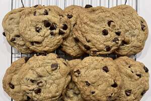

Best Chocolate Chip Cookies

The best chocolate chip cookie recipe you will ever find!
The perfect blend of sugar, spice and everything nice. These cookies will melt in your mouth and
leave you wanting for more. If you don't like these cookies then I do not know how to help you!
The perfect cookie only exists from this recipe. I cannot imagine taht you would find a better recipe anywhere else
If you decide to change anything then you should definitely not take out any sugar. That's the best part!
Ingredients
- 1 cup softened butter
- 1 cup white sugar
- 1 cup packed brown sugar
- 2 eggs
- 2 teaspoons vanilla extract
- 1 teaspoon baking soda
- 2 teaspoons hot water
- 1/2 teaspoon salt
- 3 cups all purpose flour
- 2 cups semisweet chocolate chips
- 1 cup chopped walnuts
Steps
- Preheat oven to 350 degrees F (175 degrees C).
-
Cream together the butter, white sugar, and brown sugar until smooth.
Beat in the eggs one at a time, then stir in the vanilla. Dissolve baking soda in hot water.
Add to batter along with salt. Stir in flour, chocolate chips, and nuts.
Drop by large spoonfuls onto ungreased pans.
- Bake for about 10 minutes in the preheated oven, or until edges are nicely browned.